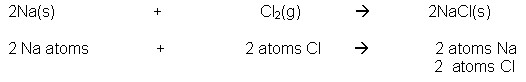
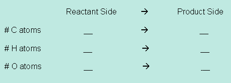
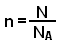
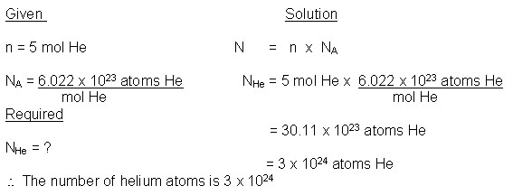
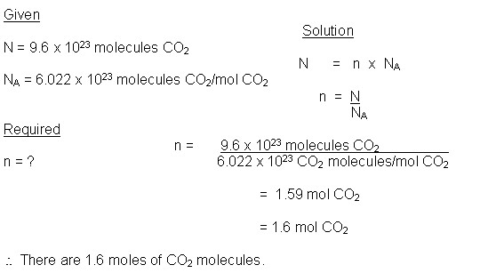

Unit 3: Quantities in Chemical Reactions
Activity 2: The Mole
Content
Did you know?

|
If you placed a pin in the middle of a football field within a large roof-covered stadium, the head of the pin would represent the nucleus and the rest of the atom, including its orbitals, would be represented by the rest of the stadium. In relative terms, that is how tiny the nucleus of the atom is compared to its size yet, almost 100% of the atom’s mass is found in its nucleus. |
|---|
When chemists perform chemical reactions, they do reactions on a very large scale compared to the size of the atoms that are reacting. Observe the reaction between sodium and chlorine gas in the following video.
|
|
Watch the video clip titled Reaction of Sodium & Chlorine Gas but please be aware, that, depending on your Internet connection speed, all clips on this page may take a few minutes to download. You can always continue reading the remainder of this page while you wait. |
|---|
The balanced chemical equation is as follows:
2Na(s) + Cl2(g) 2NaCl(s)
The balanced chemical equation represents the ratios between the elements and/or compounds in the chemical reaction and other important information relating to the reactants and products’ respective compositions.
2Na(s) + Cl2(g) 2NaCl(s)
- The chlorine molecule is composed of 2 atoms of chlorine;
- The NaCl compound is an ionic compound;
- The NaCl compound consists of 1 sodium ion and 1 chlorine ion;
- The balanced chemical equation shows us that 2 atoms of sodium in the solid state, react with 1 molecule of chlorine gas to produce 2 formula units of sodium chloride in the solid state;
Using the above mentioned balanced chemical reaction, take a closer look at these ratios at an atomic level:
Note: For purposes of explanation, the ions will be substituted with the term atom.

The Law of Conservation of Mass is obeyed at the atomic level:
- 2 sodium atoms are on the reactant side and 2 sodium atoms are on the product side;
- 2 chlorine atoms are on the reactant side and 2 chlorine atoms are on the product side.
|
|
Watch the clip titled Acetylene Rockets but please be aware, that, depending on your internet connection speed, all clips on this page may take a few minutes to download. You can always continue reading the remainder of this page while you wait. |
|---|
 Check Your Understanding
Check Your Understanding
Fill in the Blanks
- The balanced chemical equation representing the chemical reaction between acetylene and oxygen gas is…
__C2H2(g) + __O2(g)  __ _____ + __ _____
__ _____ + __ _____
- Fill in the number of atoms for each of the respective elements’ atoms:
 Answer
Answer

The coefficients of the balanced chemical equation for the combustion of acetylene show:
- 2 molecules of acetylene chemically react with 5 molecules of oxygen gas to produce
- 4 molecules of carbon dioxide gas and 2 molecules of water vapour
Chemical reactions happen on a very large scale compared to the atomic and molecular levels. Laboratories, chemical processing plants and manufacturing plants rely on the numerical ratios of the coefficients of the reactants and products to plan for a balanced chemical reaction. The individual reactants and products and their respective amounts need to be calculated even before a chemical reaction is designed for use on an industrial scale.
The Mole
Chemists need a translator to convert the numbers of atoms and molecules that are reacting, and being produced, in a chemical reaction to more manageable and measurable amounts. This translator is the International System of Units (SI) unit called the mole(mol). The mole is the number equal to the number of carbon atoms found in exactly 12 g of the carbon-12 isotope. The actual number of carbon-12 atoms found in a mole has been experimentally found to be 6.022 x 1023. This number is called Avogadro’s number(NA) in honour of the Italian scientist Amedeo Avogadro.
NA = 6.022 x 1023
The SI base unit of the amount of a substance is the mole (mol) and its symbol in a formula is represented by n. The quantity of the substance is represented by the symbol N.
The formula showing the mathematical relationship between n, N and NA is as follows:
N = n x NA
If you want to calculate n, then you rearrange the formula to look like this:

 Example 1
Example 1
How many atoms can be found in 5 moles of helium?
 Sample Solution
Sample Solution

Example 2
How many moles of carbon dioxide can be found in 9.6 x 1023 molecules of carbon dioxide?
Sample Solution

This is a disclaimer. External Resources will open in a new window. Not responsible for external content.
Unless otherwise indicated, all images in this Activity are from the public domain or are © clipart.com or Microsoft clipart and are used with permission.